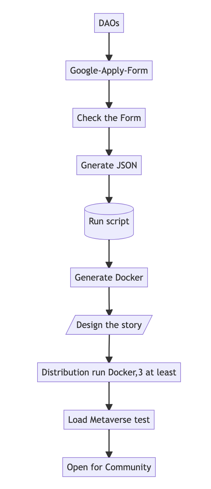

Welcome to Textverse
- Textverse is a Text Metaverse Engine for Web3.
- Build by Community, for Community. We build Public Goods.
- WE ARE THE FULL TIME WEB3 BUILDER, NOT OTHERS.
M: Build a Metaverse Prototype to accelerate the Exploration of the Metaverse.
V: Low cost, No barrier, Fast access for Everyone to jump into the Metaverse.
V: Literal Words, release the Power of Imaginations without any limitation.
Our Mission: Build for Community
- Textverse is Public goods for Community.
- It is a prototype of Metaverse for Community to Explore something interesting.
- Providing to plain users to join and play in a very Easy Mode: just Typing on any screen.
- Mint NFTs to help players to own their value and assets in Web3.
- Build relations with the DAOs by Tokens Exchange Stake, they are all the stake-holders of us.
- Textverse can help any communities,DAOs extend their story within a Text Metaverse.
- Also, we build a series of tools and smart contracts to solve the engineering problems.
- So the communities can focus on the Creative and Imaginations on their Metaverse.
- Cornerstone of the Web3.
Our Vision: Everyone Jump into Metaverse
- We are Textverse, build Web3 Infrastructure, A Text Metaverse Engine Category Primitives.
- We build Public Goods for Web3 with Interoperability and Composability.
- Textverse has three parts:
- Open NFT Transfer Protocol with series of Smart contract, maintained by the Protocol DAO.
- Text Metaverse Engine with Web3 TID for any communities, free to use, maintained by the real company.
- DAO2DAO service mode(D2D,we create this first？) with ReGenEconomics is our long time service.
Our Value: Literal Words have Powers.
- Literal is the natural ability and basic and essence of the Human Civilization.
- We have Colorful world, good music, and pretty or handsome Stars.
- But we still need, the Power of Text, or Literal Writing, the instinct of Express and Communication.
- So our value is Release the Natural Ability to Create.
- Be the basement of the Metaverse Creation and Innovation.
Problems with current
- As you know, we have many many Pixels and JPGs or 3Ds NFTs on the market.
- We call the NFT the entrance of the Metaverse. It will be multi Metaverse in the future.
- But no one gives a rule or protocol to connect the isolated NFTs and Metaverses.
- So we must build individual programs for different.
- And it will produce Value Isolation with different rules.
- Just like I have 500$ and saved in different banks, if you want to operate it, transfer or gather the assets, you can’t.
- Cause different banks have a variety of complex principles to save and withdraw.
- We need Interoperability and Composability for NFT in Metaverse.
What are Interoperability and Composability?
- NFT is great but we can only show by PFP avatar, and nothing else can do.
- We define the Interoperability:
- Engineering Problems: we build protocols and contracts and infrastructures to run it.
- Economic Alignment: we build basic circulating Tokens, offer 80% belonging to Community Token Economics.
- Making it Fun: Yes! The most Creative guys are You, the plains. We offer the blocks, you finish the LEGO.
- We define the Composability:
- Compound: More and More, Connected Metaverse with code,interfaces, systems and tokens.
- Mods: Plugin and Plugout in anywhere. Build with technical and financial and funny stories.
- Cross Area: Walk through the Metaverse with Composable DID and TID can make you be Individual.
- Creator = Player = Beneficiary: Create and Earn, Play and Earn, we are stake-holder.
Textverse Solution
- We have a basic idea called NFT Interoperability Standard.
- It can give abilities to NFT holders to INTERACTION with their NFTs, the strength of Interoperation.
- Like a Magic Transport, the Standard protocol can bridge the banks with simplicity and transparency and is open-source.
- Make your NFT assets can be transferred into and out of all Metaverse with infinite liquidity, we supply a handle convenience interface called ERC7211.
- Also empower the teams who create NFTs to make the monkeys or girlfriends on paper or Opensea page be alive in different Metaverse or same Metaverse.
- Yes, Transport your NFT to Metaverse with ONE Standard protocol and Play with it!
- Basic progress:
flowchart TD DAOs --> B[Google-Apply-Form] --> C[Check the Form] --> D[Gnerate JSON] D --> E[(Run script)] --> F[Generate Docker] --> G[/Design the story/] --> H[Distribution run Docker,3 at least] H --> I[Load Metaverse test] --> J[Open for Community]
</div>
- Above graph is build by Markdown mermaid engine, maybe unvisible for gitbook.
- 
Protocol 7211
- Metaverse Registry
- We may have many Metaverse, so we must have a Metaverse list registry.
- We define the basic meta data of Metaverse, special for Text Metaverse.
- Transfer
- If you have any PFP NFTs, you can Transfer into Any (Text) Metaverses.
- Now you can make your NFT assets be Interoperated by your will.
- Transport
- After playing in the Jurassic park, you can Transport to the Ocean World in seconds.
- Just type the screen and switch channel like TV.
- Flow

TID
- It was a ERC1155 NFT, free to mint and stake to earn.
- We will mint Crypto Tokens to record who support us, the Early Bird.
- So The Text Metaverse Registry will give you a TID record on the chain and backup in IPFS and Arweave.
- It can involve all your assets in the Metaverse with Hash link.
- Maybe in 20 years later, the DIGI DID(TID) will be your most of your life: work, credit, friends, community and fun.
Join Textverse Community
- Welcome to everyone to join, free to play.
- Q&A
- Discord
- Business Cooperation: jhfnetboy#gmail.com
- Our github.
- This page(Docs)
- Merged from two projects of the two genesis founder:jhfnetboy, into twinsant.